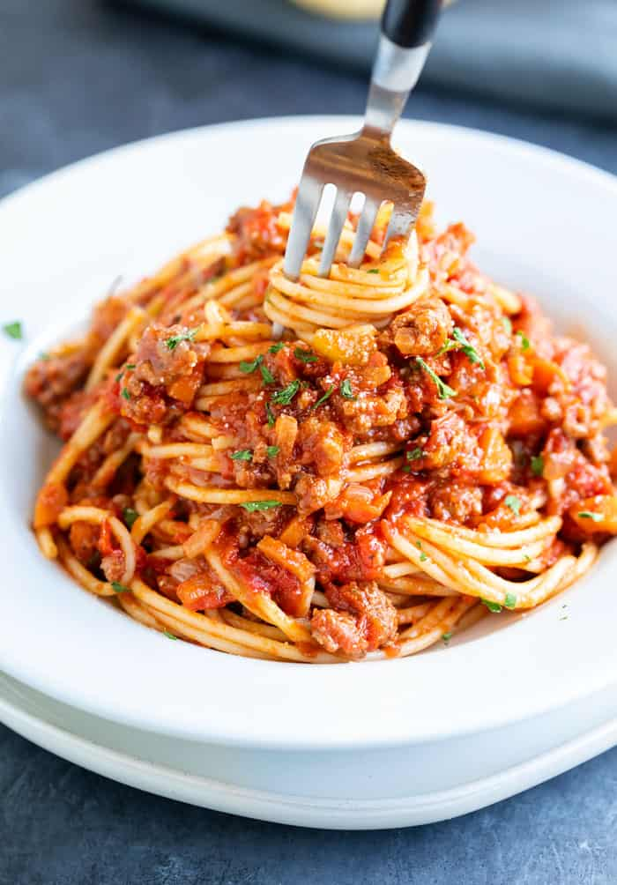

Pasta Bolognese

Description
Bolognese sauce is basically a sauce made with ground beef, onions, tomatoes and fresh herbs, and served with pasta. It’s an Italian meat sauce that originated from the city of Bologna. However, it’s more than just beef, onions and a jar of spaghetti sauce. It’s about the depth of flavor you get from cooking all the ingredients in stages and letting the sauce simmer so it becomes thick, rich and hearty.
Let's make a simple bolognese sauce.
Ingredients
- 1 medium oinon, diced
- 4 garlic cloves, minced
- 4 celery stalks, diced
- 1 large carrot, diced
- 1 pound ground lamb
- 1 pound ground beef
- 0.5 pound pancetta
- One 28-ounce can whole peeled tomatoes
- 3 tbsp tomato paste
- 1 cup white wine
- 0.5 cup milk
- 0.5 cup pecorino romano, grated
Steps
- Saute pancetta until crispy, most of fat is rendered
- Saute beef and lamb, breaking up with spoon, until the water has mostly evaporated and you can hear it crackling
- Add onion, carrot, celery and saute until soft
- Add garlic and saute for 30-60 seconds
- Add tomato paste and saute until bottom of pan develops some browning
- Deglaze with wine and simmer until reduced by about half to three quarters
- Add tomatoes, milk, and add water to cover mixture
- Simmer for 1-2 hours
- Add cheese